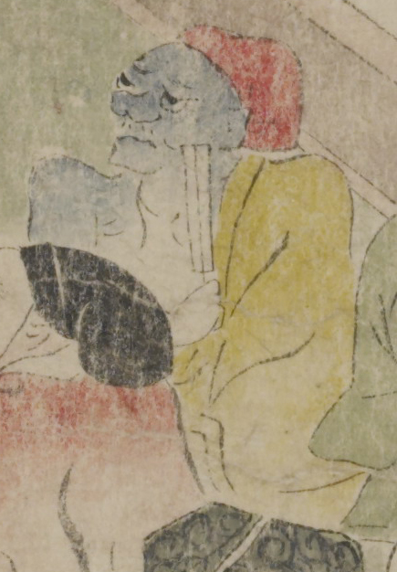

青い肌の鬼。赤い頭巾をかぶり、目蓋が垂れ、大きな鼻の下にひげを少し生やしている。黄色の着物を肩肌脱ぎにし、右手に閉じた扇子を持っている。
著作者：坂本弥一郎徳定／出典：親書誌：U426_nichibunken_0080：伊吹山酒呑童子絵巻；イブキヤマシュテンドウジエマキ／日付：2007／資源識別子：U426_nichibunken_0080_0003_0004
Copyright (c)2010- International Research Center for Japanese Studies, Kyoto, Japan. All rights reserved.